| Emiliano Martínez |
Portero |
32 |
Emiliano "Dibu" Martínez (Mar del Plata, 2 de septiembre de 1992) es un futbolista argentino que juega como arquero en el Aston Villa de la Premier League de Inglaterra. Fue clave en la obtención de la Copa América 2021 y el Mundial Catar 2022. |
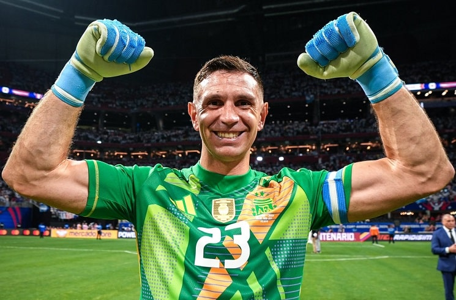 |
| Cristian Romero |
Defensa central |
26 |
Cristian Gabriel Romero (Córdoba, 27 de abril de 1998), conocido como "Cuti", es un futbolista argentino que se desempeña como defensa en el Tottenham Hotspur de la Premier League. |
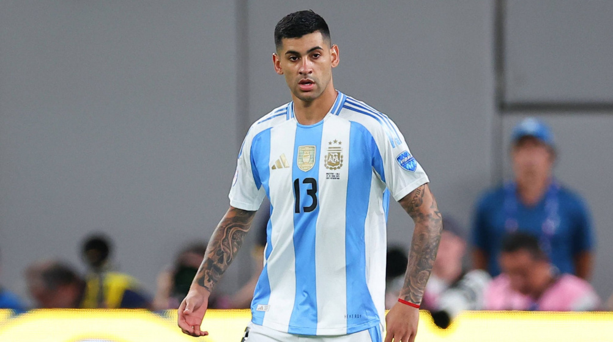 |
| Nicolás Otamendi |
Defensa central |
36 |
Nicolás Hernán Gonzalo Otamendi (Buenos Aires, 12 de febrero de 1988) es un futbolista argentino que juega como defensor en el Benfica de Portugal. Campeón del Mundial 2022. |
 |
| Rodrigo De Paul |
Mediocampista |
30 |
Rodrigo Javier De Paul (Sarandí, 24 de mayo de 1994) es un futbolista argentino que juega como mediocampista en el Atlético de Madrid. Fue pieza clave en la Copa América 2021 y el Mundial 2022. |
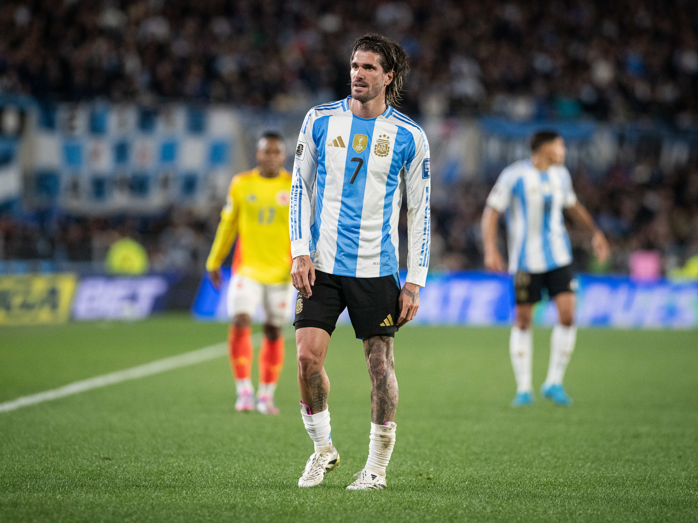 |
| Leandro Paredes |
Mediocampista |
30 |
Leandro Daniel Paredes (San Justo, 29 de junio de 1994) es un mediocampista argentino que juega en la Roma de la Serie A italiana. Campeón de la Copa América 2021 y Mundial 2022. |
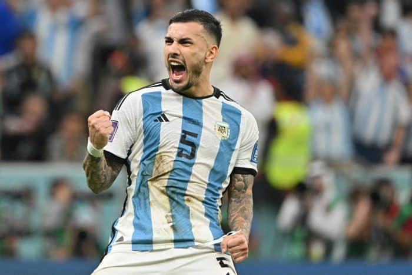 |
| Enzo Fernández |
Mediocampista |
23 |
Enzo Jeremías Fernández (San Martín, 17 de enero de 2001) es un futbolista argentino que juega como mediocampista en el Chelsea de la Premier League. Mejor Jugador Joven del Mundial 2022. |
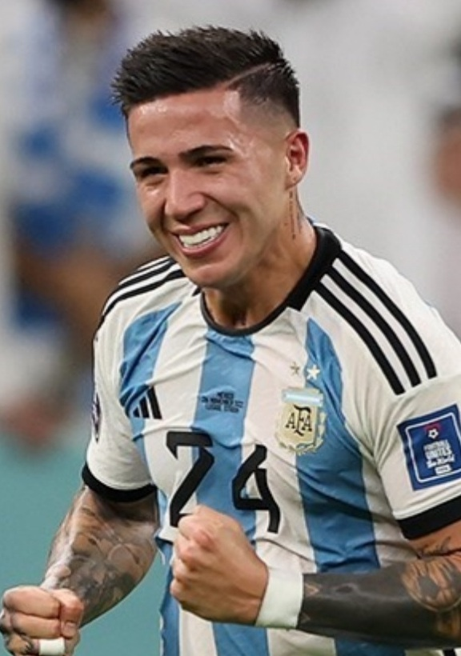 |
| Alexis Mac Allister |
Mediocampista |
25 |
Alexis Mac Allister (La Pampa, 24 de diciembre de 1998) es un futbolista argentino que juega como mediocampista en el Liverpool de la Premier League. Campeón del Mundial Catar 2022. |
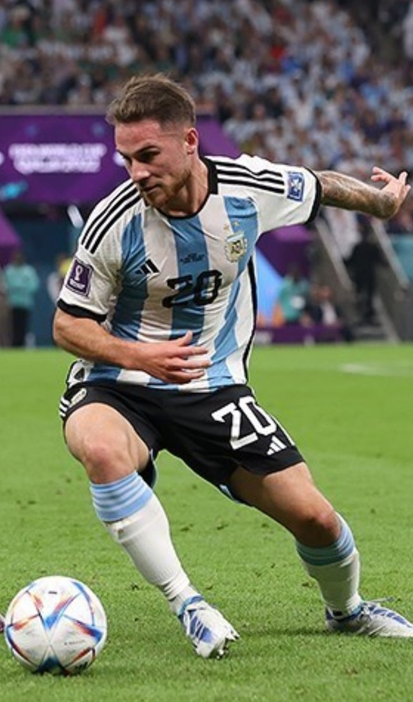 |
| Lionel Messi |
Delantero |
37 |
Lionel Andrés Messi Cuccittini (Rosario, 24 de junio de 1987) es un futbolista argentino considerado uno de los mejores de la historia. Capitán de la selección campeona de la Copa América 2021 y el Mundial 2022. |
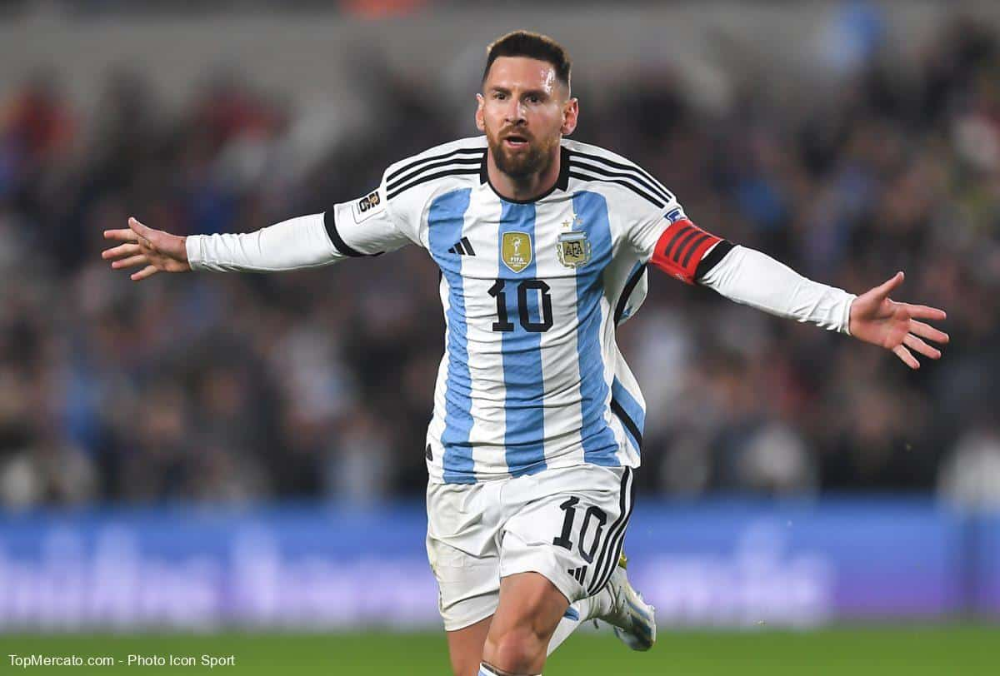 |
| Ángel Di María |
Extremo |
36 |
Ángel Fabián Di María (Rosario, 14 de febrero de 1988) es un futbolista argentino que juega como extremo. Autor de goles decisivos en la final de la Copa América 2021 y campeón del Mundial 2022. |
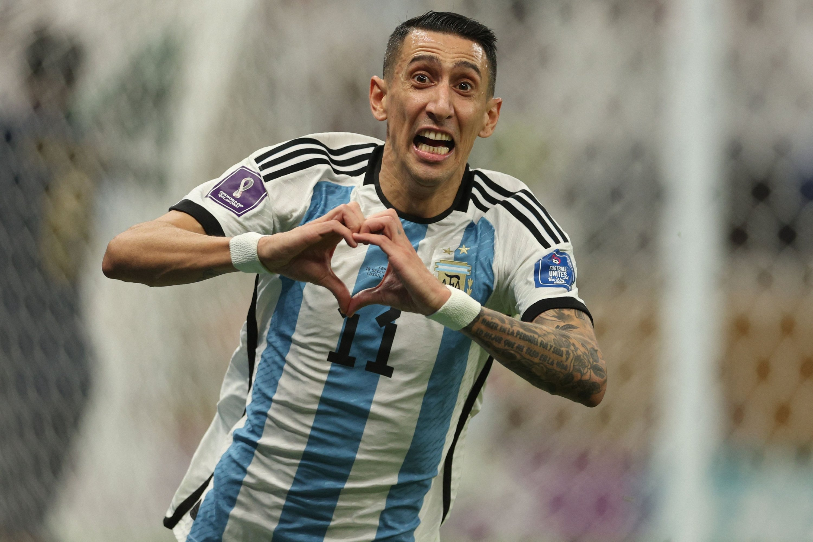 |
| Paulo Dybala |
Delantero |
31 |
Paulo Bruno Exequiel Dybala (Laguna Larga, Córdoba, 15 de noviembre de 1993) es un futbolista argentino que juega como delantero en la Roma de Italia. |
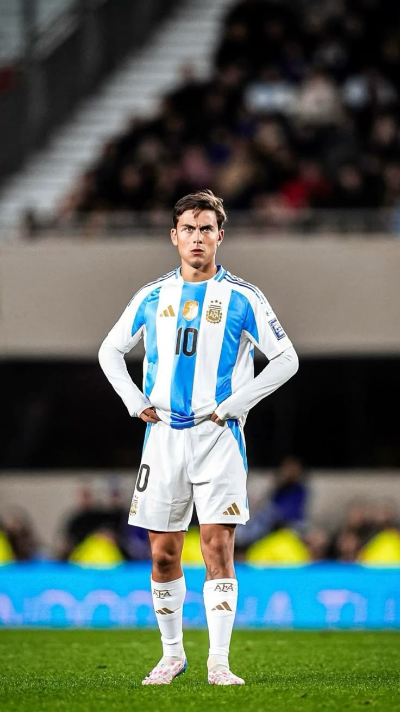 |
| Lautaro Martínez |
Delantero |
28 |
Lautaro Javier Martínez (Bahía Blanca, 22 de agosto de 1997) es un futbolista argentino que juega como delantero en el Inter de Milán de la Serie A italiana. Campeón del Mundial 2022. |
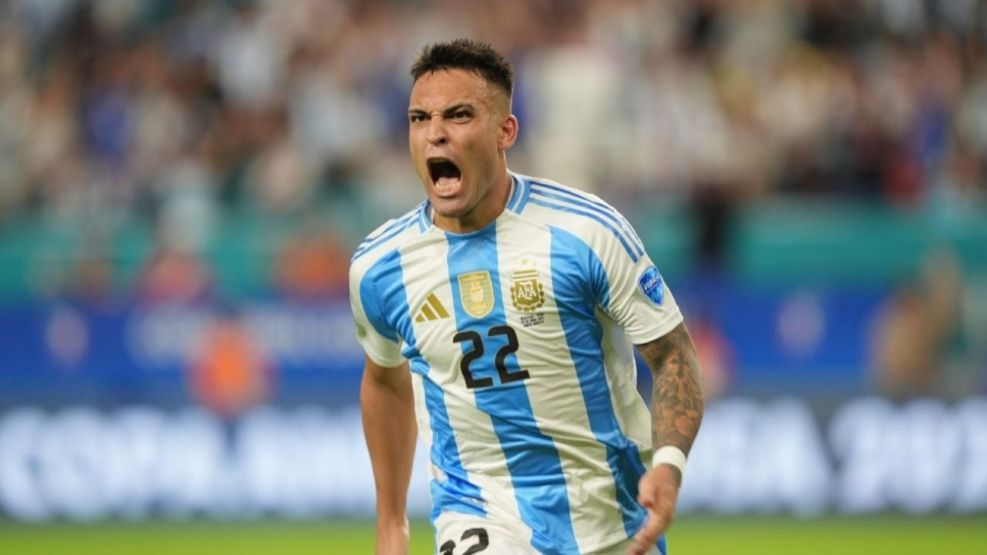 |
| Julián Álvarez |
Delantero |
25 |
Julián Álvarez (Calchín, 31 de enero de 2000) es un futbolista argentino que juega como delantero en el Manchester City. Marcó goles importantes en el Mundial 2022. |
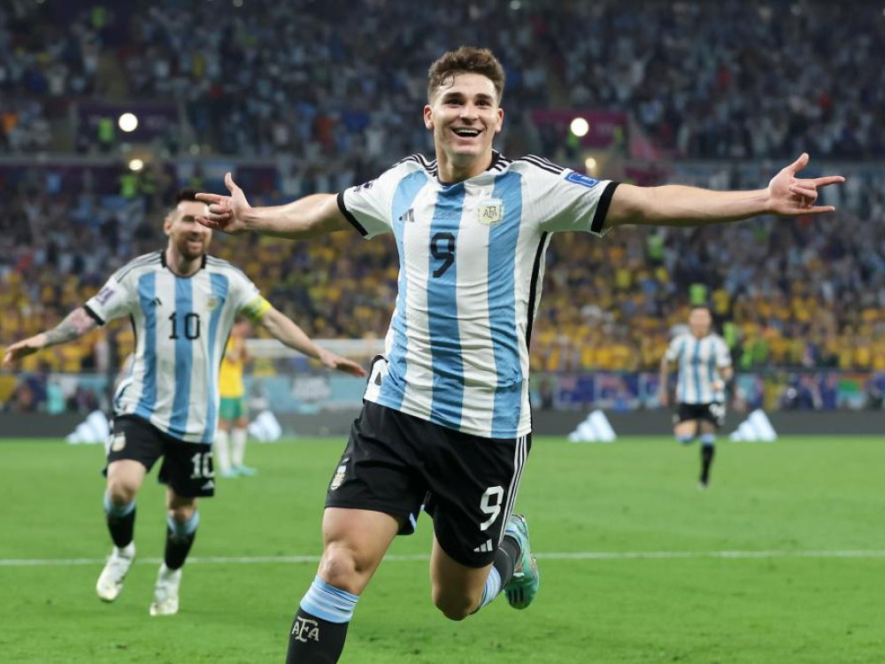 |